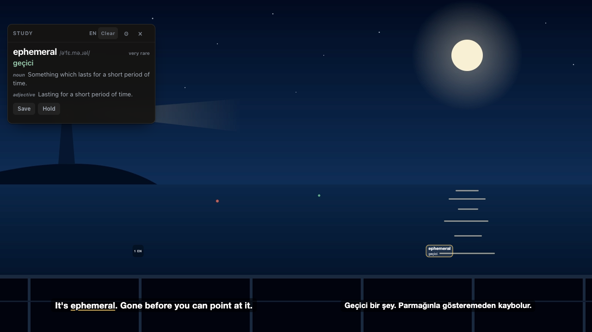
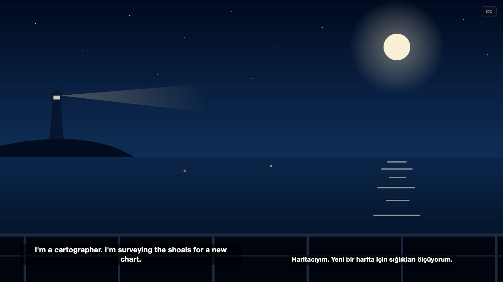
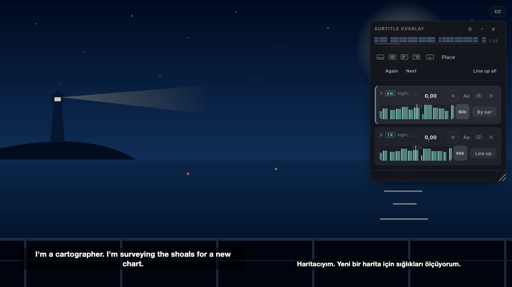
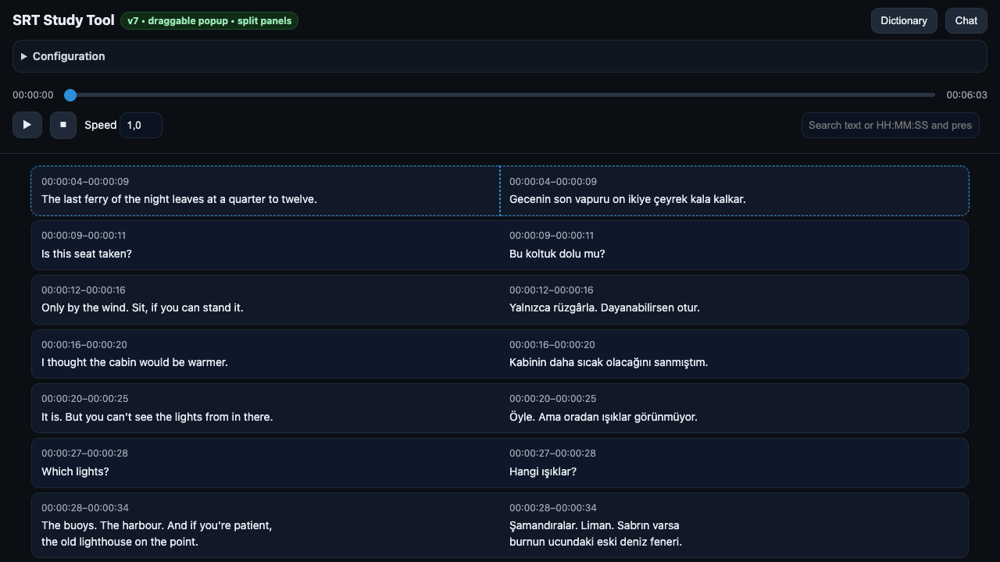

Browser extension · Chromium · plain JavaScript, no build step · MIT
Two languages, on the film's own clock.
Find a subtitle for whatever is playing in the tab, draw it over the video in step with the player, and put the language you are learning beside the one you already know. With study mode on, the words that are rare in film dialogue are underlined and their meanings appear at the side as the film runs.

Syncing a subtitle file to a video usually means estimating the offset between them. In a browser tab there is nothing to estimate: the <video> element reports where it is, so the overlay reads currentTime 20 times a second, and seeking, pausing and buffering stay in step on their own. The offset left is the one baked into a file timed against another release, and the second subtitle measures that against the first.
On the player's clock
Positions come from the page's own video element, 20 times a second. Nudge keys correct a file timed against a different release; ad breaks are shared between both subtitles, offsets are not.
Two subtitles at once
Side by side or stacked, each box dragged and resized on its own. Dragging one card onto the other swaps them, with their offsets and languages.
Rare words, marked
Each word is ranked against a frequency list counted over film subtitles, because a word can be common in print and rare in speech. The threshold is a slider.
Kept with the sentence
One key saves a word with the line it was said in, the same moment in the other subtitle, the film and the timestamp. The deck exports as TSV for Anki, or JSON.
An optional local daemon
A small Python service on 127.0.0.1 that keeps a download cache on disk, signs in to OpenSubtitles for a larger daily allowance, and serves word meanings.
A viewer, a translator, a transcriber
The same study surface for a subtitle file without a video, a batch .srt translator, and Whisper transcription for a film nobody has subtitled.
How a subtitle gets onto the video
Four steps, all in the extension; when the daemon is running, it answers the search and the download instead.
- What is playing
The title, season and episode are read from the page: its title and metadata with the site's branding stripped from either end.
- Search
OpenSubtitles is asked, and each result is scored against what the page said. A result that matches badly scores below the line where it would be attached without asking.
- Attach
The overlay is drawn in the page, in a shadow root so the site's styles cannot reach it, and follows the video's position from then on.
- Line up the second
The gap between two subtitles of the same film is the number that recurs in the differences between their cue times. It is applied alone only when the two look like the same film; otherwise it is offered.
Install
Not in a store: load it unpacked. No build step.
Load the extension
git clone \
https://github.com/mmdemirbas/subtitle-study-tool
chrome://extensions (or brave://, edge://)
Developer mode: on
Load unpacked: subtitle-study-tool/browser-extensionThen open the extension's options and paste an OpenSubtitles API key: opensubtitles.com, your account, Consumers, new consumer. It is free.
Optional: the daemon
cd subtitle-study-tool/subtitle-daemon
cp config.example.json config.local.json
# put your OpenSubtitles API key in it
./run.shNeeds uv. uv run pytest runs the tests.
What it looks like
Taken from the extension itself over an original scene and a sample pair written for the repository; node browser-extension/tools/screenshots.mjs takes them again.



What leaves the browser
- Search and download go to OpenSubtitles, with your API key, or through the daemon on 127.0.0.1 when it is running.
- Word meanings come from the daemon; without it, from dictionaryapi.dev and MyMemory only after you allow them on the options page. Marking rare words needs no network.
- The deck stays in the browser until you export it. The extension has no analytics and no account of its own.
- With a Google API key in the daemon's config, looked-up words and the lines of any subtitle it is asked to make go to Google.